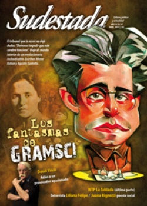

Buscar
"En México vivimos el ascenso de la mediocridad"
De visita en Argentina para presentar el disco Que 20 años no es nada, la cantante, pianista y compositora Liliana Felipe y la actriz y letrista Jesusa Rodríguez hablaron con Sudestada. Con aquella excusa, el disco en que reúnen las canciones que durante veinte años destinaron a la revista Debate Feminista, trazaron precisas ideas acerca del México actual: la política, las voces ocultadas y las cuentas pendientes en cuatro años de resistencia civil contra el fraude electoral y el rol que les espera a las canciones. por Patricio Féminis
Edición N° 97
Abril 2011
Revista bimensual
Comprar edición impresaSumario
- Los fantasmas de Gramsci
- Gestores y funcionarios
- David Viñas. Adiós a un provocador
- "En México vivimos el ascenso de la mediocridad"
- MTP. De Nicaragua a La Tablada (3ª parte)
- "El poder de creación del arte es un recurso de salud mental"
- "Lucho para que el poema no sea un manifiesto"
- El sueño del pueblo sioux
Compartir Articulo
Fueron días arduos, de energía y entrega corporal: de huellas políticas, deseos y voces elevadas en risa y llanto, los que vivieron Liliana Felipe y Jesusa Rodríguez por Buenos Aires y Córdoba, en diciembre último. Del ND/Ateneo porteño y otros en La Plata, rumbo al ex centro clandestino de detención La Perla, la pianista, cantautora de vaudeville, militancia feminista y voz cabaretera, aquí con su esposa actriz, directora y letrista cómplice, ofrecieron su voces y sus cuerpos en escena para que otras -y otros tantos- las siguieran con manos alzadas, en melodías abrasadas. Sintiéndolas nuevas: en México, durante veinte años, juntas se abocaron -casi siempre contra reloj- a publicar cada seis meses una canción en la revista Debate Feminista, y trajeron aquí el disco doble que las reúne -en el orden en que salieron- para presentarlo en vivo. Que 20 años no es nada posee 40 canciones, muchas de ellas ya en discos previos de Felipe, otras inéditas, con el desvelo de verlas y verse juntas: épocas y luchas compartidas.
Implicadas a México, denunciando a sus sicarios en el Norte y a los que, con las elecciones fraguadas de 2006, depositaron a Felipe Calderón (del PAN) en el Ejecutivo, Liliana Felipe y Jesusa Rodríguez anduvieron por Buenos Aires añorando, reviviendo pasos juntas en el otro México: el del Movimiento de Resistencia Civil Pacífica y el pueblo construyendo políticas y artes desde la base. Allá por los 90, Jesusa y Liliana fundaron el Teatro Bar El Hábito en Coyoacán, desde donde promovieron círculos de música independiente, de cabaret y acciones escénicas -a la par que las canciones en más de 13 discos- por los derechos de las campesinas, los indios, las lesbianas, las comunidades acalladas: esas voces que resuenan en el tono azteca de Felipe -ya sin rastros de su cordobés natal- desde una mesa del bar La Academia. Una tarde de calor en Buenos Aires, sabe ella, es un buen espejo para repensar a México, la política y las canciones ardientes. "¿Qué espero aquí? Que se me contagie un poquito el ánimo que tiene la gente, los jóvenes, los argentinos; eso que se está respirando de que la política puede servir para algo. Nosotras venimos de una situación física muy golpeada, muy triste, y esperamos que nos inyecte energía, ganas de hacer cosas. Que podamos servir con nuestras canciones para el momento que se vive", dice de espaldas a la mesa de billar en luz metálica bajo la que se dejaron retratar para Sudestada, segundos antes: Liliana Felipe, arremangándose la remera, los brazos junto a Jesusa Rodríguez, ella en un vestido con detalles aztecas y el largo cabello en rodete.
-Ustedes han tenido una actividad política intensa allá.
-Sí -contesta Jesusa-, frente a lo que están promoviendo los medios, la oligarquía, Estados Unidos, que los mexicanos vuelvan a votar por su verdugo en 2012, estamos trabajando fuerte con otros en todo el país. Y más allá de lo que bombardean los medios masivos, estamos confiadas en que hay que organizarse. Viene muy al caso venir acá y ver que lo que está pasando -y que aleatoriamente desató la muerte de Kirchner- se ha ido gestando antes. Bueno, quizás en México algo vaya a desatar todo ante las elecciones de 2012 o quizá las propias elecciones: que un pueblo se vuelva a poner el yugo a sí mismo sería una especie de suicidio colectivo. En eso estamos, y yo creo que es muy importante la ayuda de la música: las canciones que Lili ha compuesto en este tiempo para el Movimiento de Resistencia no son inútiles.
-¿Hay algo que explique esa sumisión de la que habla Jesusa?
L: -No sé, hay muchas cosas que no comprendo. México tiene el primer lugar en consumo de Coca Cola, el primer lugar de obesidad, de indiferencia, el primer lugar de pornografía infantil, de feminicidios, y uno dice "bueno, pero cómo". Hay algo que a mí no me ceja, porque es una cultura respetuosa del placer, de los sentidos: claro, también hay un culto a la muerte, pero eso no tiene que ver con la mediocridad. Y lo que estamos viendo ahora es el ascenso sin cortapisas de la mediocridad, la ineptitud de los gobernantes. Si algo tienen estos es eso, no sólo el bocón, el del Ejecutivo, sino todos a todos los niveles, y la parte de la sociedad que les hace la caravana.
J: -Hay una cosa aún más profunda: la mezcla cultural de hace 500 años atrás, de la corrupción que llegó con el colonialismo español, las teocracias y los autoritarismos que ya existían; junta eso y luego 300 años de Colonia, devastando los principios éticos y religiosos, la cultura autóctona, y después un proyecto de Nación que excluye a los pueblos originarios, y se explica que 500 años después el pueblo mexicano esté hecho pedazos. No sólo no ha cambiado: ha empeorado.
L: -Esta camarilla del actual gobierno en México es representante de Monsanto, de la energética Iberdrola: Agustín Carstens, el Secretario de Hacienda que fue ascendido al Banco de México es ex empleado del FMI, y aquel otro, el Francisco Gil Díaz, es de Movistar. O sea, es una cosa patética. El tipo este que fue presidente de México, Vicente Fox, fue gerente de la Coca Cola. Él tuvo una empresa que se llamó Vegetales Frescos: un fracaso rotundo. Es decir, como empresarios tampoco sirven. Yo te puedo decir: Jesu y yo mantuvimos El Hábito, esa empresa, 15 años, y no quebró. ¡Y sin ningún subsidio! Creo que fuimos la única empresa independiente a nivel cultural en México y, hombre, lo hicimos.
(La nota completa en la edición gráfica de Sudestada Nº 97 - abril 2011)
Comentarios

Sudestada
El colectivo de Revista Sudestada esta integrado por Ignacio Portela, Hugo Montero, Walter Marini, Leandro Albani, Martín Latorraca, Pablo Fernández y Repo Bandini.
Articulos más vistos


LIBRERÍA SUDESTADA

Colección infantil

Distribuidora de Libros

Suscripción

Sudestada en URUGUAY

Otros articulos de esta edición
 Malditos: Caballo loco
Malditos: Caballo loco
El sueño del pueblo sioux
Líder de la resistencia del pueblo sioux, Caballo Loco recibía las visiones de Manitú a través de los sueños y ...
Los fantasmas de Gramsci
El tribunal que lo acusó fue contundente: "Debemos impedir que este cerebro funcione". Gramsci, tras cruzar los primeros barrotes fascistas, ...
 Dossier
Dossier
MTP. De Nicaragua a La Tablada (3ª parte)
Última entrega de esta serie de artículos sobre la historia del Movimiento Todos por la Patria. La rendición de los ...
 Arte y salud en los hospitales
Arte y salud en los hospitales
"El poder de creación del arte es un recurso de salud mental"
A partir de la idea de que el encierro sólo sirve para recluir y silenciar, conversamos con trabajadores de la ...
 Poesía Blindada: Juana Bignozzi
Poesía Blindada: Juana Bignozzi
"Lucho para que el poema no sea un manifiesto"
Hija de un panadero anarquista y de una obrera textil, Juana Bignozzi abre las puertas a la poesía social desde ...
 Dossier
Dossier
David Viñas. Adiós a un provocador
Polemista feroz, incómodo observador de la realidad y desafiante de los poderosos, David Viñas se fue hace unos días, y ...